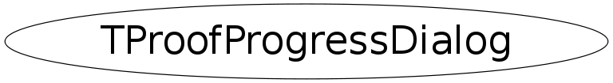

class TProofProgressDialog
TProofProgressDialog This class provides a query progress bar.
Function Members (Methods)
public:
private:
| Float_t | AdjustBytes(Float_t mbs, TString& sf) |
Data Members
private:
| TGTextButton* | fAbort | |
| TGraph* | fActWGraph | |
| TGTextButton* | fAsyn | |
| Double_t | fAvgMBRate | |
| Double_t | fAvgRate | |
| TGProgressBar* | fBar | progress bar |
| TGTextButton* | fClose | |
| TGTransientFrame* | fDialog | transient frame, main dialog window |
| TGraph* | fEffSGraph | |
| TTime | fEndTime | |
| Long64_t | fEntries | |
| TGTextEntry* | fEntry | |
| TGLabel* | fEstim | |
| Int_t | fFiles | |
| TGLabel* | fFilesEvents | |
| Long64_t | fFirst | |
| TGLabel* | fInit | |
| Float_t | fInitTime | |
| Bool_t | fKeep | |
| TGCheckButton* | fKeepToggle | |
| TGTextButton* | fLog | |
| Bool_t | fLogQuery | |
| TGCheckButton* | fLogQueryToggle | |
| TProofProgressLog* | fLogWindow | transient frame for logs |
| TGraph* | fMBRtGraph | |
| TGTextButton* | fMemPlot | |
| TProofProgressMemoryPlot* | fMemWindow | transient frame for memory plots |
| Long64_t | fPrevProcessed | |
| Long64_t | fPrevTotal | |
| Float_t | fProcTime | |
| TGLabel* | fProcessed | |
| TProof* | fProof | |
| TGLabel* | fRate | |
| TGraph* | fRateGraph | |
| TGTextButton* | fRatePlot | |
| TNtuple* | fRatePoints | |
| Int_t | fRightInfo | |
| Int_t | fSVNRev | |
| TGLabel* | fSelector | |
| TString | fSessionUrl | |
| TGCheckButton* | fSmoothSpeedo | use smooth speedometer update |
| TGSpeedo* | fSpeedo | speedometer |
| Bool_t | fSpeedoEnabled | whether to enable the speedometer |
| TTime | fStartTime | |
| TProofProgressDialog::EQueryStatus | fStatus | |
| TGTextButton* | fStop | |
| TGTextBuffer* | fTextQuery | |
| TGLabel* | fTimeLab | |
| TGLabel* | fTitleLab | |
| TGraph* | fTotSGraph | |
| TGLabel* | fTotal | |
| TGTextButton* | fUpdtSpeedo | |
| static Bool_t | fgKeepDefault | |
| static Bool_t | fgLogQueryDefault | |
| static TString | fgTextQueryDefault |
Class Charts
{kind=link}
{kind=link}
{kind=link}
{kind=link}

Function documentation
TProofProgressDialog(TProof* proof, const char* selector, Int_t files, Long64_t first, Long64_t entries)
Create PROOF processing progress dialog.
void ToggleThreshold()
void ResetProgressDialog(const char* sel, Int_t sz, Long64_t fst, Long64_t ent)
Reset dialog box preparing for new query
void Progress(Long64_t total, Long64_t processed)
Update progress bar and status labels. Use "processed == total" or "processed < 0" to indicate end of processing.
void Progress(Long64_t total, Long64_t processed, Long64_t bytesread, Float_t initTime, Float_t procTime, Float_t evtrti, Float_t mbrti, Int_t actw, Int_t tses, Float_t eses)
Update progress bar and status labels. Use "processed == total" or "processed < 0" to indicate end of processing.
Float_t AdjustBytes(Float_t mbs, TString& sf)
Transform MBs to GBs ot TBs and get the correct suffix
void DisableAsyn()
Disable the asyn switch when an external request for going asynchronous is issued
TProofProgressDialog(TProof* proof, const char* selector, Int_t files, Long64_t first, Long64_t entries)